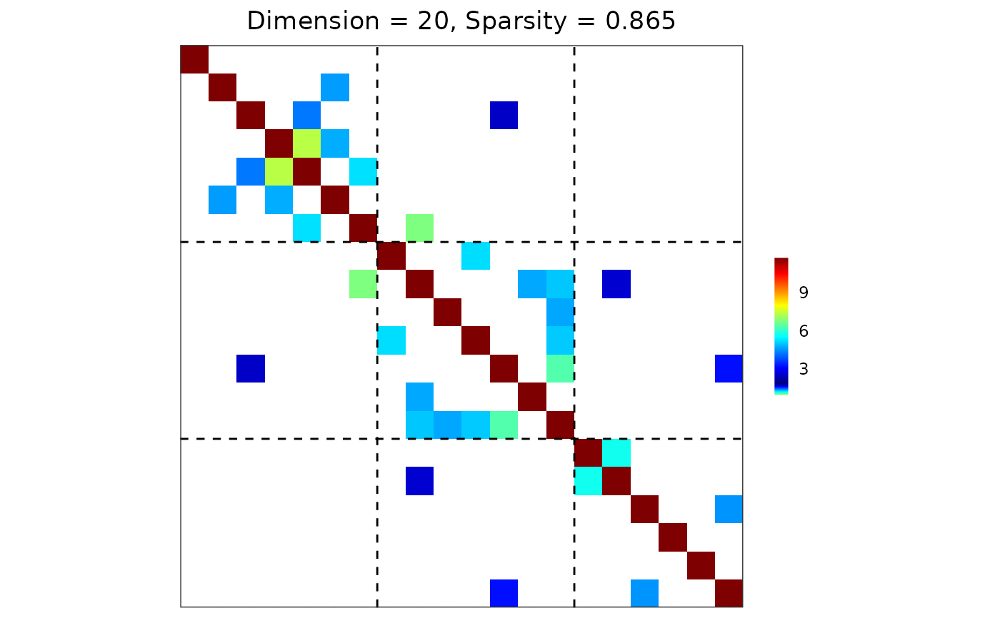

Generate a precision matrix that exhibits block structure induced by a stochastic block model (SBM).
Arguments
- d
An integer specifying the number of variables (dimensions).
- block.sizes
An integer vector (default =
NULL) specifying the size of each group. IfNULL, the \(d\) variables are divided as evenly as possible across \(K\) groups.- K
An integer (default = 3) specifying the number of groups. Ignored if
block.sizesis provided; thenK <- length(block.sizes).- prob.mat
A \(K\)-by-\(K\) symmetric matrix (default =
NULL) specifying the Bernoulli rates. Element (i,j) gives the probability of creating an edge between vertices from groups i and j. IfNULL, a matrix withwithin.probon the diagonal andbetween.proboff-diagonal is used.- within.prob
A scalar in [0,1] (default = 0.25) specifying the probability of creating an edge between vertices within the same group. This argument is used only when
prob.mat = NULL.- between.prob
A scalar in [0,1] (default = 0.05) specifying the probability of creating an edge between vertices from different groups. This argument is used only when
prob.mat = NULL.- weight.mat
A \(d\)-by-\(d\) symmetric matrix (default =
NULL) specifying the edge weights. IfNULL, weights are generated block-wise according toweight.distsandweight.paras.- weight.dists
A list (default =
list("gamma", "unif")) specifying the sampling distribution for each block of weights. Its length determines how the distributions are assigned:length = 1: Same specification for all blocks.
length = 2: First for within-group blocks, second for between-group blocks.
length = \(K + K(K-1)/2\): Full specification for each block. The first \(K\) elements correspond to within-group blocks with indices 1, ..., K, and the remaining \(K(K-1)/2\) elements correspond to between-group blocks ordered as (1,2), (1,3), ..., (1,K), (2,3), ..., (K-1,K).
Each element of
weight.distscan be:A string specifying the distribution family. Accepted distributions (base R samplers in parentheses) include:
"beta": Beta distribution (
rbeta)"cauchy": Cauchy distribution (
rcauchy)."chisq": Chi-squared distribution (
rchisq)."exp": Exponential distribution (
rexp)."f": F distribution (
rf)."gamma": Gamma distribution (
rgamma)."lnorm": Log normal distribution (
rlnorm)."norm": Normal distribution (
rnorm)."t": Student's t distribution (
rt)."unif": Uniform distribution (
runif)."weibull": Weibull distribution (
rweibull).
A user-supplied function used for sampling. The function must accept an argument
nspecifying the number of samples.
- weight.paras
A list (default =
list(c(shape = 1e4, rate = 1e2), c(min = 0, max = 5))) specifying the parameters associated withweight.dists. It must follow the same length rules asweight.dists. Each element should be a named vector or list suitable for the corresponding sampler.- cond.target
A scalar (default = 100) specifying the target condition number for the precision matrix. A diagonal shift is applied so that the smallest eigenvalue satisfies \(\lambda_{\min} \geq \lambda_{\max}/\code{cond.target}\), ensuring both positive definiteness and numerical stability.
Value
An object with S3 class "grasps" containing the following components:
- Omega
The precision matrix with SBM block structure.
- Sigma
The covariance matrix, i.e., the inverse of
Omega.- sparsity
Proportion of zero entries in
Omega.- membership
An integer vector specifying the group membership.
Details
Edge sampling.
Within- and between-group edges are sampled independently according to
Bernoulli distributions specified by prob.mat, or by within.prob
and between.prob if prob.mat is not supplied.
Weight sampling.
Conditional on the adjacency structure, edge weights are sampled block-wise
from samplers specified in weight.dists and weight.paras.
The length of weight.dists (and weight.paras) determines how
weight distributions are assigned:
length = 1: Same specification for all blocks.
length = 2: first for within-group blocks, second for between-group blocks.
length = \(K + K(K - 1)/2\): Full specification for each block.
Block indexing. The order for blocks is:
Within-group blocks: Indices 1, ..., K.
Between-group blocks: \(K(K-1)/2\) blocks in order (1,2), (1,3), ..., (1,K), (2,3), ..., (K-1,K).
Positive definiteness.
The weighted adjacency matrix is symmetrized and used as the precision matrix
\(\Omega_0\). Since arbitrary block-structured weights may not be positive
definite, a diagonal adjustment is applied to control the eigenvalue spectrum.
Specifically, let \(\lambda_{\max}\) and \(\lambda_{\min}\) denote
the largest and smallest eigenvalues of the initial matrix. A scalar
\(\tau\) is added to the diagonal so that
$$\lambda_{\min}(\Omega_0 + \tau I) \;\geq\;
\lambda_{\max} / \code{cond.target},
$$
which ensures both positive definiteness and that the condition number
does not exceed cond.target. This guarantees numerical stability even
in high-dimensional settings.
Examples
library(grasps)
## reproducibility for everything
set.seed(1234)
## block-structured precision matrix based on SBM
sim <- gen_prec_sbm(d = 100, K = 5,
within.prob = 0.5, between.prob = 0.05,
weight.dists = list("gamma", "unif"),
weight.paras = list(c(shape = 20, scale = 5), c(min = 0, max = 1)),
cond.target = 100)
## visualization
plot(sim)
